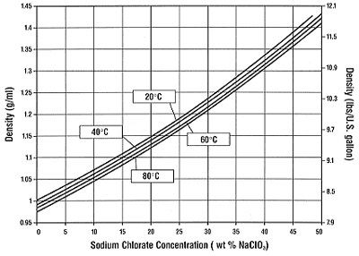

![[Graph showing relationship between weight%, grams per 100g water and grams per liter of (25C)solution for NaClO3]](_img/convert.gif)
The graph above was obtained from the table below. And can be useful as a ready reckoner for converting the rather confusing descriptions of chlorate solutions.
| General: | The chemical formula of sodium chlorate is NaClO3 CAS No.7775-09-9. Molecular weight is 106.44. |
| Some properties of NaClO3 | |
|---|---|
| Physical Properties: | Sodium Chlorate Crystal |
| Appearance: | White to off-white, odorless, crystalline solid |
| Melting Point: | 248° (478°) |
| Boiling Point: | None, decomposes at about 300° (572°) |
| Hygroscopicity: | Moderate |
| Bulk Density: | Approximately 97.5 lbs/cu ft |
| Solubility: | Soluble in water |
| Heat of Solution: | -52.6 cal/g = -94.7 BTU/lb (endothermic) |
Chemical Properties. Sodium Chlorate is a powerful oxidizing agent. When heated in
the pure state, it will begin to decompose slowly at about 300° (570°). with the
evolution of oxygen and the formation of Sodium Chloride. This decomposition is strongly
exothermic and self-sustaining above a critical temperature. The large amounts of Oxygen
released can cause the burning of combustible materials to be explosively rapid.
As shipped, Sodium Chlorate is not a fire or explosion hazard. However, many substances when combined with Sodium chlorate form explosive mixtures. Such combinations, particularly those containing certain organic materials, can be extremely sensitive to shock, friction or heat. Organic contaminants in this category include alcohols, solvents, sugars, sawdust, paint, lint, vegetable dusts, oils and greases.
The primary inorganic contaminants to avoid are sulfur, sulfides, ammonium compounds, phosphorus, cyanides, powdered metals, acids, or any kind of reducing agent.
When impregnated with chlorate from contact with an aqueous solution, combustible materials such as paper, wood, cloth and leather become dangerously flammable if dry and may be ignited by friction, heat or a drop of strong acid.
Alkaline chlorate solutions do not exhibit strong oxidizing properties. However, as pH decreases, the oxidizing activity of these solutions will increase. Concentrated acid solutions are vigorous oxidizing agents.
Commercial sodium chlorate solutions are neutral or slightly basic. Under these conditions they are stable in storage over a long period of time.
Sodium Chloride Concentration (wt% NaCl)
This chart presents composition and saturation temperature data for mixtures of salt and sodium chlorate dissolved in water. The composition and saturation temperature can be obtained for any point on the sodium chlorate saturation surface. Sodium chlorate solubility isotherms are drawn for every 20° interval from -20° to 100°. As an example, the saturation temperature of a water solution containing 40% NaClO3 and 4% NaCl was estimated: The location of this composition was found to lie between the NaClO3 saturation isotherms for 0°C and 20°C. By interpolation, the saturation temperature was estimated at 5°C.
| This table shows some data points of saturation from the graph above(Fig 9). The amounts of dissolved solids are shown as both weight% and grams solute per 100g water | |||||||||||||||||||||||||||||||||||||||||||||||||||||||||||||||||||||||||||||||||
|---|---|---|---|---|---|---|---|---|---|---|---|---|---|---|---|---|---|---|---|---|---|---|---|---|---|---|---|---|---|---|---|---|---|---|---|---|---|---|---|---|---|---|---|---|---|---|---|---|---|---|---|---|---|---|---|---|---|---|---|---|---|---|---|---|---|---|---|---|---|---|---|---|---|---|---|---|---|---|---|---|---|
|
| ||||||||||||||||||||||||||||||||||||||||||||||||||||||||||||||||||||||||||||||||
|
| ||||||||||||||||||||||||||||||||||||||||||||||||||||||||||||||||||||||||||||||||
See here for mutual solubility graphs in units of grams and moles solute per 100ml solution.
The graph above was obtained from the table below. And can be useful as a ready reckoner for converting the rather confusing descriptions of chlorate solutions.
| Concentration (WT% NaClO3) |
Density at 25° (g/ml) |
Concentration (gpl NaClO3) |
Concentration (wt% NaClO3) |
Density at 25° (g/ml) |
Concentration (gpl NaClO3) |
|---|---|---|---|---|---|
| 0 | 0.997 | 0 | 26 | 1.194 | 310 |
| 1 | 1.003 | 10 | 27 | 1.203 | 325 |
| 2 | 1.009 | 20 | 28 | 1.212 | 339 |
| 3 | 1.016 | 30 | 29 | 1.221 | 354 |
| 4 | 1.022 | 41 | 30 | 1.231 | 369 |
| 5 | 1.029 | 51 | 31 | 1.240 | 384 |
| 6 | 1.036 | 62 | 32 | 1.250 | 400 |
| 7 | 1.043 | 73 | 33 | 1.259 | 416 |
| 8 | 1.050 | 84 | 34 | 1.269 | 431 |
| 9 | 1.057 | 95 | 35 | 1.279 | 448 |
| 10 | 1.064 | 106 | 36 | 1.289 | 464 |
| 11 | 1.072 | 118 | 37 | 1.299 | 481 |
| 12 | 1.079 | 129 | 38 | 1.309 | 497 |
| 13 | 1.087 | 141 | 39 | 1.319 | 515 |
| 14 | 1.094 | 153 | 40 | 1.330 | 532 |
| 15 | 1.102 | 165 | 41 | 1.340 | 549 |
| 16 | 1.110 | 178 | 42 | 1.351 | 567 |
| 17 | 1.118 | 190 | 43 | 1.361 | 585 |
| 18 | 1.126 | 203 | 44 | 1.372 | 604 |
| 19 | 1.134 | 215 | 45 | 1.383 | 622 |
| 20 | 1.142 | 228 | 46 | 1.394 | 641 |
| 21 | 1.151 | 242 | 47 | 1.405 | 660 |
| 22 | 1.159 | 255 | 48 | 1.416 | 680 |
| 23 | 1.168 | 269 | 49 | 1.428 | 700 |
| 24 | 1.176 | 282 | 50 | 1.439 | 720 |
| 25 | 1.185 | 296 |
The table above shows the density of Sodium chlorate solution at 25C at various concentrations.
Note that the weight % is directly convertable to grams chlorate per 100 grams water.
For example if the weight% is 40, that's 40 grams chlorate per 100 grams solution. Thats the same as 40 grams of chlorate in 60 grams water, which is the same as (40 X 100/60) = 66.666g/100g water.
The following equation can be used to calculate the density of Sodium Chlorate solutions at varying temperatures and concentrations.
| Let: | x = percent of NaClO3 in the solution. |
|---|---|
| y = percent of NaCl in the solution. | |
| T = Temperature in ° for which the solution density is required |
| Then: Density at T° = | 0.9965 + | 62.5x+0.52x2+69.3y2+0.81xy+(25-T) {4.5+0.05 (0.9x+y)} |
| 104 |

The graph above shows the density of a solution of sodium chlorate in solution at different concentrations and at a few different temperatures. Each line is giving similar data to the table above which shows density of sodium chlorate at 25C. There is no data for 25C which is the temperature used in the table above, if you were to put in a line between 20 and 40C you would get the same figures as the table above. The graph dosen,t show grams/liter like the table.
The graph above shows the density of 'R-2' solution, which is 25.5wt% chlorate, 15wt% chloride. 'R-2' is the industrial name of this concentration of solution.
The graph above shows the density of sodium chlorate + sodium chloride at various chosen sodium chloride percentages. All percentages are weight. The temperature is 25C.
The graph above shows the density of sodium chlorate + sodium chloride at various chosen sodium chloride percentages. All percentages are weight. The temperature is 40C.
The graph above shows the density of sodium chlorate + sodium chloride at various chosen sodium chloride percentages. All percentages are weight. The temperature is 60C.
The graph above shows the density of sodium chlorate + sodium chloride at various chosen sodium chloride percentages. All percentages are weight. The temperature is 80C.
Method
Equipment:
Reagents:
Procedure:
A. Sample Solution Preparation
B. Sodium Chloride Determination
or
Pipet 5 ml of sample for solution concentrations
of 75 to 150 gpl.
C. Calculation
2.922 x volume of titrant = g/l NaCl (50 ml sample)
29.22 x volume of titrant = g/l NaCl (5 ml sample)
The factor (2.922) is related to the AgNO3 normality and sample size. See
Principle, section B, for further explanation.
Hazards:
Careful handling of chlorate is essential. Contact with any combustibles such as paper, wood, of clothing should be avoided. It is recommended that a metal disposal can for combustibles that have come in contact with chlorate and a container for recycling waste chlorate to the process be made available in the laboratory.
Information concerning the hazards of the chemical products used in this procedure is found in the MSDS file.
Scope:
Principle:
Ag+ + Cl- ------> AgCl (White precipitate)
2Ag + + CrO4-2 ------> Ag2CrO4
(Red color)
| grams/liter NaCl= | (Volume AgNO3) (Normality AgNO3) x 58.44 |
| Volume of sample |
Factors may be computed using constants in the formula above.
Precautions:
Because end point recognition is based on color perception, precise end point recognition is difficult. Techs in each laboratory must be trained to detect the correct end point.
Interferences:
pH can effect end point recognition: Cl- as a contaminant in high purity water can give high results.
Sampling:
Samples will usually be warm when taken. Samples are analyzed at 20° for accurate results, unless otherwise specified by the customer. Samples containing high concentrations of Sodium Chlorate (400-600 gpl) are pipetted as soon as possible as the sample will crystallize.
Hazards:
Silver Nitrate is listed as a poison and corrosive material.
Potassium Chromate is listed as a carcinogen.
Information concerning the hazards of these chemical products can be found in the
supplier's MSDS.
Method
Equipment:
Reagents:
Procedure:
A. Sample Solution Preparation
B. Sodium Chlorate Determination
C. Calculation:
| gpl NaClO3= | (Vy - Vx) (K2Cr2O7N) eq wt. of NaClO3 |
| actual ml of sample used |
| gpl NaClO3= | (Vy - Vx) (0.2818) (17.74) | or gpl NaClO3 = (Vy - Vx) 25 |
| 0.20 |
Vy = Buret volume of Blank (approx. 40 ml)
Vx= Buret volume of sample.
Hazards:
Careful handling of chlorate solution is essential. Contact with any combustibles such as paper, wood, or clothing should be avoided.
It is advisable to have a metal disposal can in the laboratory for combustibles that have come in contact with chlorate and a container for recycling waste chlorate to the system.
Dichromates are listed as carcinogens; see the MSDS for Potassium Dichromate in the MSDS manual.
Acids and mixed acid solutions are listed as Corrosives; see the MSDS for the specific acid in the MSDS manual.
Scope:
This procedure determines the concentration of Sodium Chlorate solutions with a range of 200 to 650 gpl.
Principle: A. Reaction Equations: 6Fe+2 + 6H+ + (Cl+5O3)-
------> 6Fe+3 + Cl- + 3H2O B. Calculations: C. Precautions: Interferences: None observed. Sampling: Samples are warm when taken, and during the piping the temperature is maintained.
Chlorate is reduced by Fe+2 in known excess. The
remaining unoxidized Fe+2 is then oxidized
to Fe+3 by the redox titration of Cr+6 to Cr+3.
6Fe+2 + 14H+ + (Cr2+6O7)-2
------> 6Fe+3 + 2Cr+3 + 7H2O
gpl NaClO3=
(Vy - Vx) (K2Cr2O7N) (eq wt.
of NaClO3)
actual ml of sample used
NOTE:
Vy = buret Volume of blank
Vx = buret Volume of sample
Potassium Dichromate Solution K2Cr2O7 (0.2818 N)
Method:
Equipment:
Reagents:
Procedure:
A. Solution Preparation
B. Standardization Check
C. Chlorate Test Check
A Sodium Chlorate Check sample is made from a known amount of Sodium Chlorate (dried at 120°) dissolved to a 600 to 630 gpl NaClO3 solution. This sample is to be tested on a regular basis and recorded. It is also analyzed when questions arise concerning reagents or procedures.
Procedure:
63.5 g FeSO4 * 7H2O + 100 ml of concentrated H2SO4 and dilute to l liter with DI water in water bath. (Must be kept cool throughout.)
Procedure:
7000 ml DI water, 1500 ml concentrated Sulfuric Acid, & 1500 ml concentrated Phosphoric Acid. Add acid slowly in a water bath.
Procedure:
Weigh 1.0 g of reagent and place in a 500 ml Volumetric flask. Add water to dissolve. Then add 25 ml mixed acid solution and dilute to mark with DI water.
EKA CHEMICALS 1998